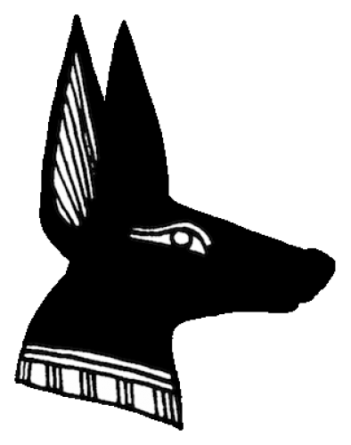
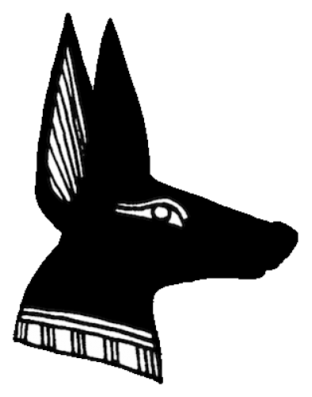

Anúbis, uma figura icônica da mitologia egípcia, é frequentemente representado como um deus com a cabeça de chacal. Ele desempenha um papel significativo no panteão egípcio como o guardião dos mortos e o senhor da necrópole. Sua dualidade reflete a crença na transição entre a vida e a morte.
Anúbis é tradicionalmente associado ao processo de embalsamamento e ao julgamento das almas após a morte. Acreditava-se que ele guiava as almas dos falecidos através dos perigosos caminhos do pós-vida, protegendo-os contra ameaças sobrenaturais. Sua representação de chacal carrega um simbolismo profundo, pois os chacais eram animais frequentemente avistados nos arredores dos cemitérios, ligando-o à terra dos mortos.
Nos rituais funerários, Anúbis ocupava um lugar de destaque, ajudando na preservação dos corpos e guiando as almas rumo ao tribunal divino. Ele também era visto como um mediador entre os vivos e os deuses, conectando o mundo terreno ao além. Sua importância na mitologia reflete a profunda reverência e preocupação do antigo Egito pela vida após a morte e pela preservação da identidade após o falecimento.
Hoje, a figura de Anúbis ainda captura a imaginação, sendo uma das representações mais emblemáticas da rica e complexa mitologia egípcia. Sua presença como protetor dos mortos e guia espiritual continua a intrigar e inspirar aqueles que buscam entender as profundezas da crença e da espiritualidade do antigo Egito.
 
